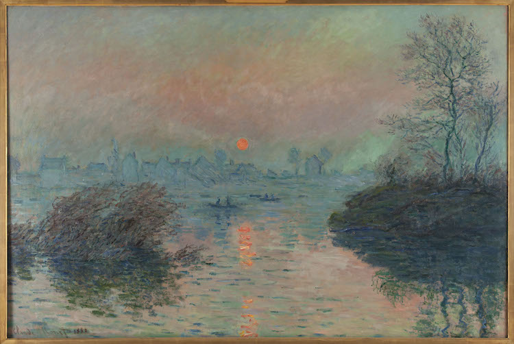
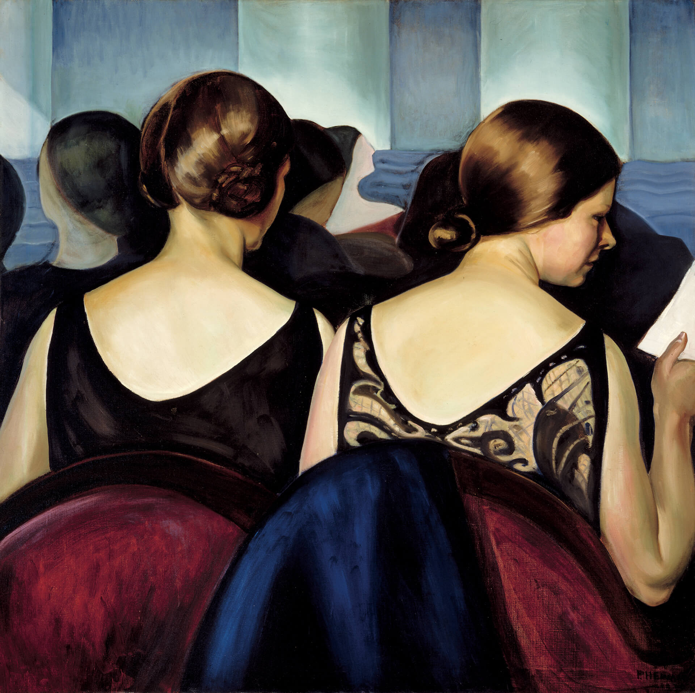
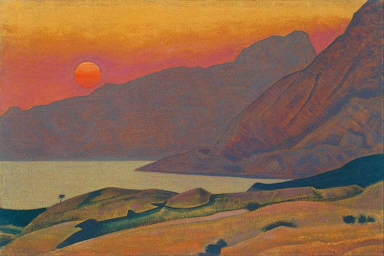

Home
About
Gallery
Contact
Junimo Gallery
Gallery
Upcoming Exhibitions
- Junimo Local Artist Showcase 2023, May 8, 2023 – June 29, 2023
- Views of Lake Michigan, July 15, 2023 – September 3, 2023
Current Exhibition: Works in Public Domain
Exhibition is open to the public from February 11–April 1, 2023

Claude Monet (1840–1926). Setting sun in Lavacourt. Oil on canvas. 1880.

Prudence Heward (1896–1947) At the Theatre. Oil on canvas. 1928.

Nicholas Roerich (1874–1947). Monhegan Maine. Oil on canvas. 1922.
Past Exhibitions
- Moments Under Ice: Winter 2022, November 12, 2022 – January 30, 2023
- Junimo Film Photography Showcase 2022, August 17, 2022 – October 24, 2022
- The Keepers of the Forest, June 24, 2022 – August 1, 2022